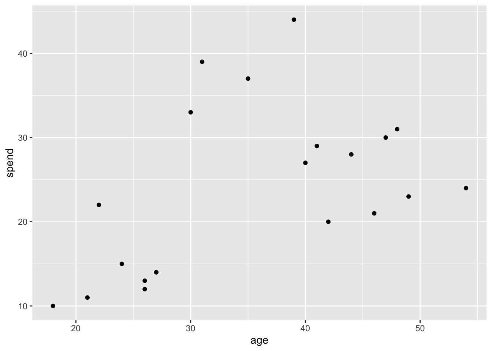
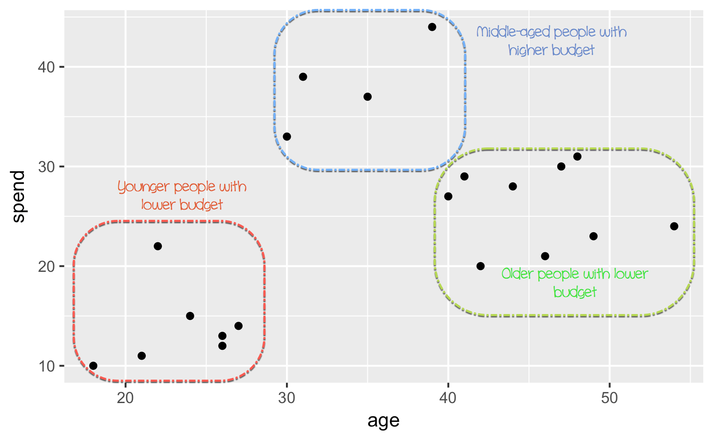
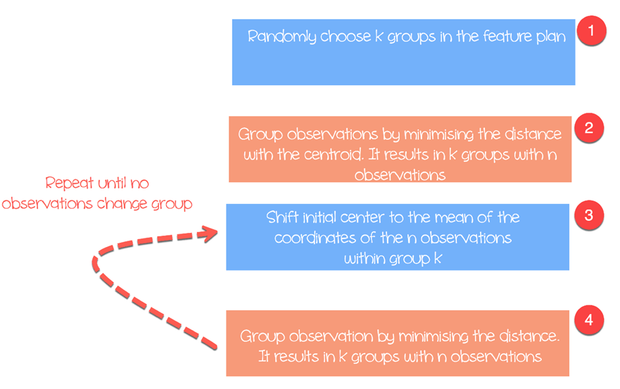
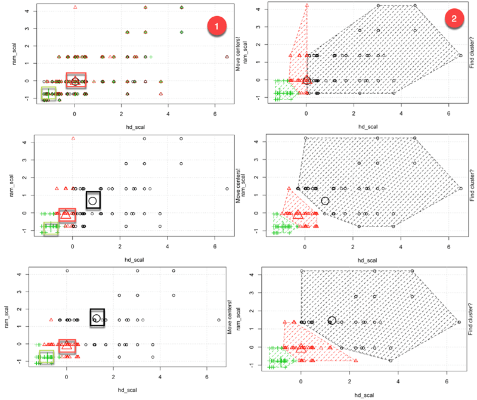
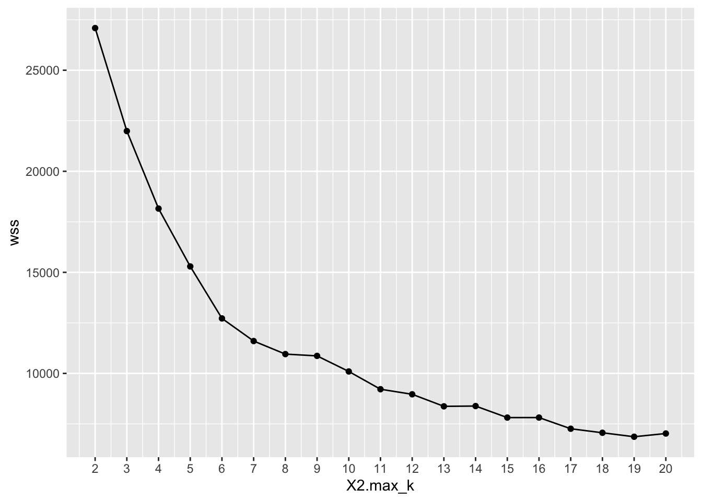
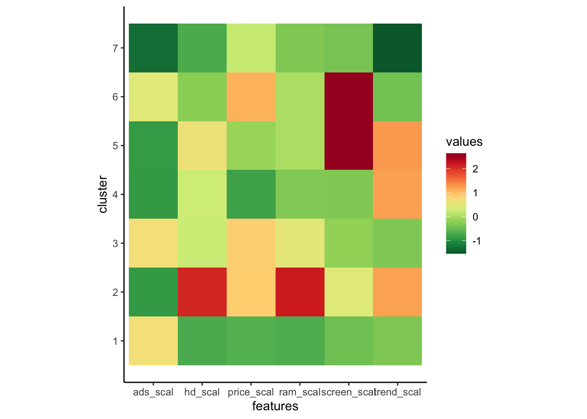

<!DOCTYPE html>

<html>

<head>

<meta charset="utf-8" />
<meta name="generator" content="pandoc" />
<meta http-equiv="X-UA-Compatible" content="IE=EDGE" />


<title>Lesson 25</title>

<script src="site_libs/jquery-1.11.3/jquery.min.js"></script>
<meta name="viewport" content="width=device-width, initial-scale=1" />
<link href="site_libs/bootstrap-3.3.5/css/flatly.min.css" rel="stylesheet" />
<script src="site_libs/bootstrap-3.3.5/js/bootstrap.min.js"></script>
<script src="site_libs/bootstrap-3.3.5/shim/html5shiv.min.js"></script>
<script src="site_libs/bootstrap-3.3.5/shim/respond.min.js"></script>
<script src="site_libs/jqueryui-1.11.4/jquery-ui.min.js"></script>
<link href="site_libs/tocify-1.9.1/jquery.tocify.css" rel="stylesheet" />
<script src="site_libs/tocify-1.9.1/jquery.tocify.js"></script>
<script src="site_libs/navigation-1.1/tabsets.js"></script>
<script src="site_libs/accessible-code-block-0.0.1/empty-anchor.js"></script>
<script src="site_libs/kePrint-0.0.1/kePrint.js"></script>
<link href="site_libs/lightable-0.0.1/lightable.css" rel="stylesheet" />
<link href="site_libs/font-awesome-5.1.0/css/all.css" rel="stylesheet" />
<link href="site_libs/font-awesome-5.1.0/css/v4-shims.css" rel="stylesheet" />
<!DOCTYPE html PUBLIC "-//W3C//DTD HTML 4.01//EN" "http://www.w3.org/TR/html4/strict.dtd">
<html>
<head>
  <meta http-equiv="Content-Type" content="text/html; charset=utf-8">
  <meta http-equiv="Content-Style-Type" content="text/css">
  <title></title>
  <meta name="Generator" content="Cocoa HTML Writer">
  <meta name="CocoaVersion" content="1504">
  <!-- this script changes the anchor position -->
  <!-- http://jsfiddle.net/ianclark001/rkocah23/ -->
<script>
(function(document, history, location) {
  var HISTORY_SUPPORT = !!(history && history.pushState);

  var anchorScrolls = {
    ANCHOR_REGEX: /^#[^ ]+$/,
    OFFSET_HEIGHT_PX: 65,

    /**
     * Establish events, and fix initial scroll position if a hash is provided.
     */
    init: function() {
      this.scrollToCurrent();
      $(window).on('hashchange', $.proxy(this, 'scrollToCurrent'));
      $('body').on('click', 'a', $.proxy(this, 'delegateAnchors'));
    },

    /**
     * Return the offset amount to deduct from the normal scroll position.
     * Modify as appropriate to allow for dynamic calculations
     */
    getFixedOffset: function() {
      return this.OFFSET_HEIGHT_PX;
    },

    /**
     * If the provided href is an anchor which resolves to an element on the
     * page, scroll to it.
     * @param  {String} href
     * @return {Boolean} - Was the href an anchor.
     */
    scrollIfAnchor: function(href, pushToHistory) {
      var match, anchorOffset;

      if(!this.ANCHOR_REGEX.test(href)) {
        return false;
      }

      match = document.getElementById(href.slice(1));

      if(match) {
        anchorOffset = $(match).offset().top - this.getFixedOffset();
        $('html, body').animate({ scrollTop: anchorOffset});

        // Add the state to history as-per normal anchor links
        if(HISTORY_SUPPORT && pushToHistory) {
          history.pushState({}, document.title, location.pathname + href);
        }
      }

      return !!match;
    },
    
    /**
     * Attempt to scroll to the current location's hash.
     */
    scrollToCurrent: function(e) {
      if(this.scrollIfAnchor(window.location.hash) && e) {
        e.preventDefault();
      }
    },

    /**
     * If the click event's target was an anchor, fix the scroll position.
     */
    delegateAnchors: function(e) {
      var elem = e.target;

      if(this.scrollIfAnchor(elem.getAttribute('href'), true)) {
        e.preventDefault();
      }
    }
  };

    $(document).ready($.proxy(anchorScrolls, 'init'));
})(window.document, window.history, window.location);
</script>

</head>
<body>
</body>
</html>

<style type="text/css">
  code{white-space: pre-wrap;}
  span.smallcaps{font-variant: small-caps;}
  span.underline{text-decoration: underline;}
  div.column{display: inline-block; vertical-align: top; width: 50%;}
  div.hanging-indent{margin-left: 1.5em; text-indent: -1.5em;}
  ul.task-list{list-style: none;}
    </style>


<style type="text/css">code{white-space: pre;}</style>
<style type="text/css" data-origin="pandoc">
code.sourceCode > span { display: inline-block; line-height: 1.25; }
code.sourceCode > span { color: inherit; text-decoration: inherit; }
code.sourceCode > span:empty { height: 1.2em; }
.sourceCode { overflow: visible; }
code.sourceCode { white-space: pre; position: relative; }
div.sourceCode { margin: 1em 0; }
pre.sourceCode { margin: 0; }
@media screen {
div.sourceCode { overflow: auto; }
}
@media print {
code.sourceCode { white-space: pre-wrap; }
code.sourceCode > span { text-indent: -5em; padding-left: 5em; }
}
pre.numberSource code
  { counter-reset: source-line 0; }
pre.numberSource code > span
  { position: relative; left: -4em; counter-increment: source-line; }
pre.numberSource code > span > a:first-child::before
  { content: counter(source-line);
    position: relative; left: -1em; text-align: right; vertical-align: baseline;
    border: none; display: inline-block;
    -webkit-touch-callout: none; -webkit-user-select: none;
    -khtml-user-select: none; -moz-user-select: none;
    -ms-user-select: none; user-select: none;
    padding: 0 4px; width: 4em;
    color: #aaaaaa;
  }
pre.numberSource { margin-left: 3em; border-left: 1px solid #aaaaaa;  padding-left: 4px; }
div.sourceCode
  {   }
@media screen {
code.sourceCode > span > a:first-child::before { text-decoration: underline; }
}
code span.al { color: #ff0000; font-weight: bold; } /* Alert */
code span.an { color: #60a0b0; font-weight: bold; font-style: italic; } /* Annotation */
code span.at { color: #7d9029; } /* Attribute */
code span.bn { color: #40a070; } /* BaseN */
code span.bu { } /* BuiltIn */
code span.cf { color: #007020; font-weight: bold; } /* ControlFlow */
code span.ch { color: #4070a0; } /* Char */
code span.cn { color: #880000; } /* Constant */
code span.co { color: #60a0b0; font-style: italic; } /* Comment */
code span.cv { color: #60a0b0; font-weight: bold; font-style: italic; } /* CommentVar */
code span.do { color: #ba2121; font-style: italic; } /* Documentation */
code span.dt { color: #902000; } /* DataType */
code span.dv { color: #40a070; } /* DecVal */
code span.er { color: #ff0000; font-weight: bold; } /* Error */
code span.ex { } /* Extension */
code span.fl { color: #40a070; } /* Float */
code span.fu { color: #06287e; } /* Function */
code span.im { } /* Import */
code span.in { color: #60a0b0; font-weight: bold; font-style: italic; } /* Information */
code span.kw { color: #007020; font-weight: bold; } /* Keyword */
code span.op { color: #666666; } /* Operator */
code span.ot { color: #007020; } /* Other */
code span.pp { color: #bc7a00; } /* Preprocessor */
code span.sc { color: #4070a0; } /* SpecialChar */
code span.ss { color: #bb6688; } /* SpecialString */
code span.st { color: #4070a0; } /* String */
code span.va { color: #19177c; } /* Variable */
code span.vs { color: #4070a0; } /* VerbatimString */
code span.wa { color: #60a0b0; font-weight: bold; font-style: italic; } /* Warning */

</style>
<script>
// apply pandoc div.sourceCode style to pre.sourceCode instead
(function() {
  var sheets = document.styleSheets;
  for (var i = 0; i < sheets.length; i++) {
    if (sheets[i].ownerNode.dataset["origin"] !== "pandoc") continue;
    try { var rules = sheets[i].cssRules; } catch (e) { continue; }
    for (var j = 0; j < rules.length; j++) {
      var rule = rules[j];
      // check if there is a div.sourceCode rule
      if (rule.type !== rule.STYLE_RULE || rule.selectorText !== "div.sourceCode") continue;
      var style = rule.style.cssText;
      // check if color or background-color is set
      if (rule.style.color === '' && rule.style.backgroundColor === '') continue;
      // replace div.sourceCode by a pre.sourceCode rule
      sheets[i].deleteRule(j);
      sheets[i].insertRule('pre.sourceCode{' + style + '}', j);
    }
  }
})();
</script>
<style type="text/css">
  pre:not([class]) {
    background-color: white;
  }
</style>


<style type="text/css">
h1 {
  font-size: 34px;
}
h1.title {
  font-size: 38px;
}
h2 {
  font-size: 30px;
}
h3 {
  font-size: 24px;
}
h4 {
  font-size: 18px;
}
h5 {
  font-size: 16px;
}
h6 {
  font-size: 12px;
}
.table th:not([align]) {
  text-align: left;
}
</style>


<link rel="stylesheet" href="style.css" type="text/css" />


<style type = "text/css">
.main-container {
  max-width: 940px;
  margin-left: auto;
  margin-right: auto;
}
code {
  color: inherit;
  background-color: rgba(0, 0, 0, 0.04);
}
img {
  max-width:100%;
}
.tabbed-pane {
  padding-top: 12px;
}
.html-widget {
  margin-bottom: 20px;
}
button.code-folding-btn:focus {
  outline: none;
}
summary {
  display: list-item;
}
</style>


<style type="text/css">
/* padding for bootstrap navbar */
body {
  padding-top: 60px;
  padding-bottom: 40px;
}
/* offset scroll position for anchor links (for fixed navbar)  */
.section h1 {
  padding-top: 65px;
  margin-top: -65px;
}
.section h2 {
  padding-top: 65px;
  margin-top: -65px;
}
.section h3 {
  padding-top: 65px;
  margin-top: -65px;
}
.section h4 {
  padding-top: 65px;
  margin-top: -65px;
}
.section h5 {
  padding-top: 65px;
  margin-top: -65px;
}
.section h6 {
  padding-top: 65px;
  margin-top: -65px;
}
.dropdown-submenu {
  position: relative;
}
.dropdown-submenu>.dropdown-menu {
  top: 0;
  left: 100%;
  margin-top: -6px;
  margin-left: -1px;
  border-radius: 0 6px 6px 6px;
}
.dropdown-submenu:hover>.dropdown-menu {
  display: block;
}
.dropdown-submenu>a:after {
  display: block;
  content: " ";
  float: right;
  width: 0;
  height: 0;
  border-color: transparent;
  border-style: solid;
  border-width: 5px 0 5px 5px;
  border-left-color: #cccccc;
  margin-top: 5px;
  margin-right: -10px;
}
.dropdown-submenu:hover>a:after {
  border-left-color: #ffffff;
}
.dropdown-submenu.pull-left {
  float: none;
}
.dropdown-submenu.pull-left>.dropdown-menu {
  left: -100%;
  margin-left: 10px;
  border-radius: 6px 0 6px 6px;
}
</style>

<script>
// manage active state of menu based on current page
$(document).ready(function () {
  // active menu anchor
  href = window.location.pathname
  href = href.substr(href.lastIndexOf('/') + 1)
  if (href === "")
    href = "index.html";
  var menuAnchor = $('a[href="' + href + '"]');

  // mark it active
  menuAnchor.parent().addClass('active');

  // if it's got a parent navbar menu mark it active as well
  menuAnchor.closest('li.dropdown').addClass('active');
});
</script>

<!-- tabsets -->

<style type="text/css">
.tabset-dropdown > .nav-tabs {
  display: inline-table;
  max-height: 500px;
  min-height: 44px;
  overflow-y: auto;
  background: white;
  border: 1px solid #ddd;
  border-radius: 4px;
}

.tabset-dropdown > .nav-tabs > li.active:before {
  content: "";
  font-family: 'Glyphicons Halflings';
  display: inline-block;
  padding: 10px;
  border-right: 1px solid #ddd;
}

.tabset-dropdown > .nav-tabs.nav-tabs-open > li.active:before {
  content: "&#xe258;";
  border: none;
}

.tabset-dropdown > .nav-tabs.nav-tabs-open:before {
  content: "";
  font-family: 'Glyphicons Halflings';
  display: inline-block;
  padding: 10px;
  border-right: 1px solid #ddd;
}

.tabset-dropdown > .nav-tabs > li.active {
  display: block;
}

.tabset-dropdown > .nav-tabs > li > a,
.tabset-dropdown > .nav-tabs > li > a:focus,
.tabset-dropdown > .nav-tabs > li > a:hover {
  border: none;
  display: inline-block;
  border-radius: 4px;
  background-color: transparent;
}

.tabset-dropdown > .nav-tabs.nav-tabs-open > li {
  display: block;
  float: none;
}

.tabset-dropdown > .nav-tabs > li {
  display: none;
}
</style>

<!-- code folding -->


<style type="text/css">

#TOC {
  margin: 25px 0px 20px 0px;
}
@media (max-width: 768px) {
#TOC {
  position: relative;
  width: 100%;
}
}

@media print {
.toc-content {
  /* see https://github.com/w3c/csswg-drafts/issues/4434 */
  float: right;
}
}

.toc-content {
  padding-left: 30px;
  padding-right: 40px;
}

div.main-container {
  max-width: 1200px;
}

div.tocify {
  width: 20%;
  max-width: 260px;
  max-height: 85%;
}

@media (min-width: 768px) and (max-width: 991px) {
  div.tocify {
    width: 25%;
  }
}

@media (max-width: 767px) {
  div.tocify {
    width: 100%;
    max-width: none;
  }
}

.tocify ul, .tocify li {
  line-height: 20px;
}

.tocify-subheader .tocify-item {
  font-size: 0.90em;
}

.tocify .list-group-item {
  border-radius: 0px;
}


</style>


</head>

<body>


<div class="container-fluid main-container">


<!-- setup 3col/9col grid for toc_float and main content  -->
<div class="row-fluid">
<div class="col-xs-12 col-sm-4 col-md-3">
<div id="TOC" class="tocify">
</div>
</div>

<div class="toc-content col-xs-12 col-sm-8 col-md-9">


<div class="navbar navbar-default  navbar-fixed-top" role="navigation">
  <div class="container">
    <div class="navbar-header">
      <button type="button" class="navbar-toggle collapsed" data-toggle="collapse" data-target="#navbar">
        <span class="icon-bar"></span>
        <span class="icon-bar"></span>
        <span class="icon-bar"></span>
      </button>
      <a class="navbar-brand" href="index.html">An R Tutorial for Beginners</a>
    </div>
    <div id="navbar" class="navbar-collapse collapse">
      <ul class="nav navbar-nav">
        <li>
  <a href="index.html">
    <span class="fas fa-home"></span>
     
    Home
  </a>
</li>
<li>
  <a href="about.html">
    <span class="fas fa-info-circle"></span>
     
    About
  </a>
</li>
<li class="dropdown">
  <a href="#" class="dropdown-toggle" data-toggle="dropdown" role="button" aria-expanded="false">
    <span class="fas fa-bars"></span>
     
    Lessons
     
    <span class="caret"></span>
  </a>
  <ul class="dropdown-menu" role="menu">
    <li class="dropdown-submenu">
      <a href="#" class="dropdown-toggle" data-toggle="dropdown" role="button" aria-expanded="false">Introduction</a>
      <ul class="dropdown-menu" role="menu">
        <li>
          <a href="R-course_lesson-1.html">Lesson 1</a>
        </li>
        <li>
          <a href="R-course_lesson-2.html">Lesson 2</a>
        </li>
        <li>
          <a href="R-course_lesson-3.html">Lesson 3</a>
        </li>
        <li>
          <a href="R-course_lesson-4.html">Lesson 4</a>
        </li>
      </ul>
    </li>
    <li class="dropdown-submenu">
      <a href="#" class="dropdown-toggle" data-toggle="dropdown" role="button" aria-expanded="false">Data Preparation</a>
      <ul class="dropdown-menu" role="menu">
        <li>
          <a href="R-course_lesson-5.html">Lesson 5</a>
        </li>
        <li>
          <a href="R-course_lesson-6.html">Lesson 6</a>
        </li>
        <li>
          <a href="R-course_lesson-7.html">Lesson 7</a>
        </li>
        <li>
          <a href="R-course_lesson-8.html">Lesson 8</a>
        </li>
        <li>
          <a href="R-course_lesson-9.html">Lesson 9</a>
        </li>
      </ul>
    </li>
    <li class="dropdown-submenu">
      <a href="#" class="dropdown-toggle" data-toggle="dropdown" role="button" aria-expanded="false">Programming</a>
      <ul class="dropdown-menu" role="menu">
        <li>
          <a href="R-course_lesson-10.html">Lesson 10</a>
        </li>
        <li>
          <a href="R-course_lesson-11.html">Lesson 11</a>
        </li>
        <li>
          <a href="R-course_lesson-12.html">Lesson 12</a>
        </li>
        <li>
          <a href="R-course_lesson-13.html">Lesson 13</a>
        </li>
        <li>
          <a href="R-course_lesson-14.html">Lesson 14</a>
        </li>
        <li>
          <a href="R-course_lesson-15.html">Lesson 15</a>
        </li>
        <li>
          <a href="R-course_lesson-16.html">Lesson 16</a>
        </li>
        <li>
          <a href="R-course_lesson-17.html">Lesson 17</a>
        </li>
      </ul>
    </li>
    <li class="dropdown-submenu">
      <a href="#" class="dropdown-toggle" data-toggle="dropdown" role="button" aria-expanded="false">Data Analysis</a>
      <ul class="dropdown-menu" role="menu">
        <li>
          <a href="R-course_lesson-18.html">Lesson 18</a>
        </li>
        <li>
          <a href="R-course_lesson-19.html">Lesson 19</a>
        </li>
        <li>
          <a href="R-course_lesson-20.html">Lesson 20</a>
        </li>
        <li>
          <a href="R-course_lesson-21.html">Lesson 21</a>
        </li>
        <li>
          <a href="R-course_lesson-22.html">Lesson 22</a>
        </li>
      </ul>
    </li>
    <li class="dropdown-submenu">
      <a href="#" class="dropdown-toggle" data-toggle="dropdown" role="button" aria-expanded="false">Data Analysis 2</a>
      <ul class="dropdown-menu" role="menu">
        <li>
          <a href="R-course_lesson-23.html">Lesson 23</a>
        </li>
        <li>
          <a href="R-course_lesson-24.html">Lesson 24</a>
        </li>
        <li>
          <a href="R-course_lesson-25.html">Lesson 25</a>
        </li>
      </ul>
    </li>
  </ul>
</li>
      </ul>
      <ul class="nav navbar-nav navbar-right">
        
      </ul>
    </div><!--/.nav-collapse -->
  </div><!--/.container -->
</div><!--/.navbar -->

<div class="fluid-row" id="header">


<h1 class="title toc-ignore">K-means Clustering in R (with Example)</h1>

</div>


<div id="what-is-cluster-analysis" class="section level1">
<h1>What is Cluster analysis?</h1>
<p>Cluster analysis is part of the unsupervised learning. A cluster is a group of data that share similar features. We can say, clustering analysis is more about discovery than a prediction. The machine searches for similarity in the data. For instance, you can use cluster analysis for the following application:</p>
<ul>
<li>Customer segmentation: Looks for similarity between groups of customers</li>
<li>Stock Market clustering: Group stock based on performances</li>
<li>Reduce dimensionality of a dataset by grouping observations with similar values</li>
</ul>
<p>Clustering analysis is not too difficult to implement and is meaningful as well as actionable for business.</p>
<p>The most striking difference between supervised and unsupervised learning lies in the results. Unsupervised learning creates a new variable, the label, while supervised learning predicts an outcome. The machine helps the practitioner in the quest to label the data based on close relatedness. It is up to the analyst to make use of the groups and give a name to them.</p>
<p>Let’s make an example to understand the concept of clustering. For simplicity, we work in two dimensions. You have data on the total spend of customers and their ages. To improve advertising, the marketing team wants to send more targeted emails to their customers.</p>
<p>In the following graph, you plot the total spend and the age of the customers.</p>
<div class="sourceCode" id="cb1"><pre class="sourceCode r"><code class="sourceCode r"><span id="cb1-1"><a href="#cb1-1"></a><span class="kw">library</span>(ggplot2)</span>
<span id="cb1-2"><a href="#cb1-2"></a>df &lt;-<span class="st"> </span><span class="kw">data.frame</span>(<span class="dt">age =</span> <span class="kw">c</span>(<span class="dv">18</span>, <span class="dv">21</span>, <span class="dv">22</span>, <span class="dv">24</span>, <span class="dv">26</span>, <span class="dv">26</span>, <span class="dv">27</span>, <span class="dv">30</span>, <span class="dv">31</span>, <span class="dv">35</span>, <span class="dv">39</span>, <span class="dv">40</span>, <span class="dv">41</span>, <span class="dv">42</span>, <span class="dv">44</span>, <span class="dv">46</span>, <span class="dv">47</span>, <span class="dv">48</span>, <span class="dv">49</span>, <span class="dv">54</span>),</span>
<span id="cb1-3"><a href="#cb1-3"></a>    <span class="dt">spend =</span> <span class="kw">c</span>(<span class="dv">10</span>, <span class="dv">11</span>, <span class="dv">22</span>, <span class="dv">15</span>, <span class="dv">12</span>, <span class="dv">13</span>, <span class="dv">14</span>, <span class="dv">33</span>, <span class="dv">39</span>, <span class="dv">37</span>, <span class="dv">44</span>, <span class="dv">27</span>, <span class="dv">29</span>, <span class="dv">20</span>, <span class="dv">28</span>, <span class="dv">21</span>, <span class="dv">30</span>, <span class="dv">31</span>, <span class="dv">23</span>, <span class="dv">24</span>)</span>
<span id="cb1-4"><a href="#cb1-4"></a>)</span>
<span id="cb1-5"><a href="#cb1-5"></a><span class="kw">ggplot</span>(df, <span class="kw">aes</span>(<span class="dt">x =</span> age, <span class="dt">y =</span> spend)) <span class="op">+</span><span class="st"> </span><span class="kw">geom_point</span>()</span></code></pre></div>
<p> A pattern is visible at this point</p>
<ol style="list-style-type: decimal">
<li>At the bottom-left, you can see young people with a lower purchasing power</li>
<li>Upper-middle reflects people with a job that they can afford spend more</li>
<li>Finally, older people with a lower budget.</li>
</ol>
<p align="center">

</p>
<p>In the figure above, you cluster the observations by hand and define each of the three groups. This example is somewhat straightforward and highly visual. If new observations are appended to the data set, you can label them within the circles. You define the circle based on our judgment. Instead, you can use Machine Learning to group the data objectively.</p>
<p>In this tutorial, you will learn how to use the <strong>k-means</strong> algorithm.</p>
</div>
<div id="k-means-algorithm" class="section level1">
<h1>K-means algorithm</h1>
<p>K-mean is, without doubt, the most popular clustering method. Researchers released the algorithm decades ago, and lots of improvements have been done to k-means.</p>
<p>The algorithm tries to find groups by minimizing the distance between the observations, called local optimal solutions. The distances are measured based on the coordinates of the observations. For instance, in a two-dimensional space, the coordinates are simple.</p>
<p align="center">

</p>
<p>The algorithm works as follow:</p>
<ul>
<li>Step 1: Choose groups in the feature plan randomly</li>
<li>Step 2: Minimize the distance between the cluster center and the different observations (centroid). It results in groups with observations</li>
<li>Step 3: Shift the initial centroid to the mean of the coordinates within a group.</li>
<li>Step 4: Minimize the distance according to the new centroids. New boundaries are created. Thus, observations will move from one group to another</li>
<li>Repeat until no observation changes groups</li>
</ul>
<p>K-means usually takes the Euclidean distance between the feature and feature : <span class="math display">\[\text{distance}(x,y)=\sum_{i=1}^n(x_i-y_i)^2\]</span> Different measures are available such as the Manhattan distance or Minlowski distance. Note that, K-mean returns different groups each time you run the algorithm. Recall that the first initial guesses are random and compute the distances until the algorithm reaches a homogeneity within groups. That is, k-mean is very sensitive to the first choice, and unless the number of observations and groups are small, it is almost impossible to get the same clustering.</p>
<div id="select-the-number-of-clusters" class="section level2">
<h2>Select the number of clusters</h2>
<p>Another difficulty found with k-mean is the choice of the number of clusters. You can set a high value of , i.e. a large number of groups, to improve stability but you might end up with overfit of data. Overfitting means the performance of the model decreases substantially for new coming data. The machine learnt the little details of the data set and struggle to generalize the overall pattern.</p>
<p>The number of clusters depends on the nature of the data set, the industry, business and so on. However, there is a rule of thumb to select the appropriate number of clusters: <span class="math display">\[\text{cluster}=\sqrt{2/n}\]</span> with equals to the number of observation in the dataset.</p>
<p>Generally speaking, it is interesting to spend times to search for the best value of to fit with the business need.</p>
<p>We will use the Prices of Personal Computers dataset to perform our clustering analysis. This dataset contains 6259 observations and 10 features. The dataset observes the price from 1993 to 1995 of 486 personal computers in the US. The variables are price, speed, ram, screen, cd among other.</p>
<p>You will proceed as follow:</p>
<ul>
<li>Import data</li>
<li>Train the model</li>
<li>Evaluate the model</li>
</ul>
</div>
<div id="import-data" class="section level2">
<h2>Import data</h2>
<p>K means is not suitable for factor variables because it is based on the distance and discrete values do not return meaningful values. You can delete the three categorical variables in our dataset. Besides, there are no missing values in this dataset.</p>
<div class="sourceCode" id="cb2"><pre class="sourceCode r"><code class="sourceCode r"><span id="cb2-1"><a href="#cb2-1"></a><span class="kw">library</span>(dplyr)</span>
<span id="cb2-2"><a href="#cb2-2"></a>PATH &lt;-<span class="st"> &quot;https://raw.githubusercontent.com/guru99-edu/R-Programming/master/computers.csv&quot;</span></span>
<span id="cb2-3"><a href="#cb2-3"></a>df &lt;-<span class="st"> </span><span class="kw">read.csv</span>(PATH) <span class="op">%&gt;%</span><span class="st"> </span><span class="kw">select</span>(<span class="op">-</span><span class="kw">c</span>(X, cd, multi, premium))</span>
<span id="cb2-4"><a href="#cb2-4"></a><span class="kw">glimpse</span>(df)</span></code></pre></div>
<pre><code>## Rows: 6,259
## Columns: 7
## $ price  &lt;int&gt; 1499, 1795, 1595, 1849, 3295, 3695, 1720, 1995, 2225, 2575, 21…
## $ speed  &lt;int&gt; 25, 33, 25, 25, 33, 66, 25, 50, 50, 50, 33, 66, 50, 25, 50, 50…
## $ hd     &lt;int&gt; 80, 85, 170, 170, 340, 340, 170, 85, 210, 210, 170, 210, 130, …
## $ ram    &lt;int&gt; 4, 2, 4, 8, 16, 16, 4, 2, 8, 4, 8, 8, 4, 8, 8, 4, 2, 4, 4, 8, …
## $ screen &lt;int&gt; 14, 14, 15, 14, 14, 14, 14, 14, 14, 15, 15, 14, 14, 14, 14, 14…
## $ ads    &lt;int&gt; 94, 94, 94, 94, 94, 94, 94, 94, 94, 94, 94, 94, 94, 94, 94, 94…
## $ trend  &lt;int&gt; 1, 1, 1, 1, 1, 1, 1, 1, 1, 1, 1, 1, 1, 1, 1, 1, 1, 1, 1, 1, 1,…</code></pre>
<p>From the summary statistics, you can see the data has large values. A good practice with k mean and distance calculation is to rescale the data so that the mean is equal to one and the standard deviation is equal to zero.</p>
<div class="sourceCode" id="cb4"><pre class="sourceCode r"><code class="sourceCode r"><span id="cb4-1"><a href="#cb4-1"></a><span class="kw">summary</span>(df)</span></code></pre></div>
<pre><code>##      price          speed              hd              ram        
##  Min.   : 949   Min.   : 25.00   Min.   :  80.0   Min.   : 2.000  
##  1st Qu.:1794   1st Qu.: 33.00   1st Qu.: 214.0   1st Qu.: 4.000  
##  Median :2144   Median : 50.00   Median : 340.0   Median : 8.000  
##  Mean   :2220   Mean   : 52.01   Mean   : 416.6   Mean   : 8.287  
##  3rd Qu.:2595   3rd Qu.: 66.00   3rd Qu.: 528.0   3rd Qu.: 8.000  
##  Max.   :5399   Max.   :100.00   Max.   :2100.0   Max.   :32.000  
##      screen           ads            trend      
##  Min.   :14.00   Min.   : 39.0   Min.   : 1.00  
##  1st Qu.:14.00   1st Qu.:162.5   1st Qu.:10.00  
##  Median :14.00   Median :246.0   Median :16.00  
##  Mean   :14.61   Mean   :221.3   Mean   :15.93  
##  3rd Qu.:15.00   3rd Qu.:275.0   3rd Qu.:21.50  
##  Max.   :17.00   Max.   :339.0   Max.   :35.00</code></pre>
<p>You rescale the variables with the scale() function of the dplyr library. The transformation reduces the impact of outliers and allows to compare a sole observation against the mean. If a standardized value (or z-score) is high, you can be confident that this observation is indeed above the mean (a large z-score implies that this point is far away from the mean in term of standard deviation. A z-score of two indicates the value is 2 standard deviations away from the mean. Note, the z-score follows a Gaussian distribution and is symmetrical around the mean.</p>
<div class="sourceCode" id="cb6"><pre class="sourceCode r"><code class="sourceCode r"><span id="cb6-1"><a href="#cb6-1"></a>rescale_df &lt;-<span class="st"> </span>df <span class="op">%&gt;%</span></span>
<span id="cb6-2"><a href="#cb6-2"></a><span class="kw">mutate</span>(<span class="dt">price_scal =</span> <span class="kw">scale</span>(price),</span>
<span id="cb6-3"><a href="#cb6-3"></a>    <span class="dt">hd_scal =</span> <span class="kw">scale</span>(hd),</span>
<span id="cb6-4"><a href="#cb6-4"></a>    <span class="dt">ram_scal =</span> <span class="kw">scale</span>(ram),</span>
<span id="cb6-5"><a href="#cb6-5"></a>    <span class="dt">screen_scal =</span> <span class="kw">scale</span>(screen),</span>
<span id="cb6-6"><a href="#cb6-6"></a>    <span class="dt">ads_scal =</span> <span class="kw">scale</span>(ads),</span>
<span id="cb6-7"><a href="#cb6-7"></a>    <span class="dt">trend_scal =</span> <span class="kw">scale</span>(trend)) <span class="op">%&gt;%</span></span>
<span id="cb6-8"><a href="#cb6-8"></a><span class="kw">select</span>(<span class="op">-</span><span class="kw">c</span>(price, speed, hd, ram, screen, ads, trend))</span></code></pre></div>
<p>R base has a function to run the k mean algorithm. The basic function of k mean is:</p>
<div class="sourceCode" id="cb7"><pre class="sourceCode r"><code class="sourceCode r"><span id="cb7-1"><a href="#cb7-1"></a><span class="kw">kmeans</span>(df, k)</span></code></pre></div>
<p><strong>arguments:</strong></p>
<ul>
<li>df: dataset used to run the algorithm</li>
<li>k: Number of clusters</li>
</ul>
</div>
<div id="train-the-model" class="section level2">
<h2>Train the model</h2>
<p>In figure three, you detailed how the algorithm works. You can see each step graphically with the great package build by Yi Hui (also creator of Knit for Rmarkdown). The package animation is not available in the conda library. You can use the other way to install the package with <em>install.packages(“animation”)</em>.</p>
<p>After you load the library, you add .ani after kmeans and R will plot all the steps. For illustration purpose, you only run the algorithm with the rescaled variables hd and ram with three clusters.</p>
<div class="sourceCode" id="cb8"><pre class="sourceCode r"><code class="sourceCode r"><span id="cb8-1"><a href="#cb8-1"></a><span class="kw">set.seed</span>(<span class="dv">2345</span>)</span>
<span id="cb8-2"><a href="#cb8-2"></a><span class="kw">library</span>(animation)</span>
<span id="cb8-3"><a href="#cb8-3"></a><span class="kw">kmeans.ani</span>(rescale_df[<span class="dv">2</span><span class="op">:</span><span class="dv">3</span>], <span class="dv">3</span>)</span></code></pre></div>
<p><strong>Code Explanation</strong></p>
<ul>
<li>kmeans.ani(rescale_df[2:3], 3): Select the columns 2 and 3 of rescale_df data set and run the algorithm with k sets to 3. Plot the animation.</li>
</ul>
<p align="center">

</p>
<p>You can interpret the animation as follow:</p>
<ul>
<li>Step 1: R randomly chooses three points</li>
<li>Step 2: Compute the Euclidean distance and draw the clusters. You have one cluster in green at the bottom left, one large cluster colored in black at the right and a red one between them.</li>
<li>Step 3: Compute the centroid, i.e. the mean of the clusters</li>
<li>Repeat until no data changes cluster</li>
</ul>
<p>The algorithm converged after seven iterations. You can run the k-mean algorithm in our dataset with five clusters and call it pc_cluster.</p>
<div class="sourceCode" id="cb9"><pre class="sourceCode r"><code class="sourceCode r"><span id="cb9-1"><a href="#cb9-1"></a>pc_cluster &lt;-<span class="kw">kmeans</span>(rescale_df, <span class="dv">5</span>)</span></code></pre></div>
<p>The list pc_cluster contains seven interesting elements:</p>
<ul>
<li>pc_cluster$cluster: Indicates the cluster of each observation</li>
<li>pc_cluster$centers: The cluster centres</li>
<li>pc_cluster$totss: The total sum of squares</li>
<li>pc_cluster$withinss: Within sum of square. The number of components return is equal to <code>k</code></li>
<li>pc_cluster$tot.withinss: Sum of withinss</li>
<li>pc_clusterbetweenss: Total sum of square minus Within sum of square</li>
<li>pc_cluster$size: Number of observation within each cluster</li>
</ul>
<p>You will use the sum of the within sum of square (i.e. tot.withinss) to compute the optimal number of clusters k. Finding k is indeed a substantial task.</p>
</div>
<div id="optimal-k" class="section level2">
<h2>Optimal k</h2>
<p>One technique to choose the best k is called the elbow method. This method uses within-group homogeneity or within-group heterogeneity to evaluate the variability. In other words, you are interested in the percentage of the variance explained by each cluster. You can expect the variability to increase with the number of clusters, alternatively, heterogeneity decreases. Our challenge is to find the k that is beyond the diminishing returns. Adding a new cluster does not improve the variability in the data because very few information is left to explain.</p>
<p>In this tutorial, we find this point using the heterogeneity measure. The Total within clusters sum of squares is the tot.withinss in the list return by kmean().</p>
<p>You can construct the elbow graph and find the optimal k as follow:</p>
<ul>
<li>Step 1: Construct a function to compute the total within clusters sum of squares</li>
<li>Step 2: Run the algorithm times</li>
<li>Step 3: Create a data frame with the results of the algorithm</li>
<li>Step 4: Plot the results</li>
</ul>
<p><strong>Step 1)</strong> Construct a function to compute the total within clusters sum of squares</p>
<p>You create the function that runs the k-mean algorithm and store the total within clusters sum of squares</p>
<div class="sourceCode" id="cb10"><pre class="sourceCode r"><code class="sourceCode r"><span id="cb10-1"><a href="#cb10-1"></a>kmean_withinss &lt;-<span class="st"> </span><span class="cf">function</span>(k) {</span>
<span id="cb10-2"><a href="#cb10-2"></a>    cluster &lt;-<span class="st"> </span><span class="kw">kmeans</span>(rescale_df, k)</span>
<span id="cb10-3"><a href="#cb10-3"></a>    <span class="kw">return</span> (cluster<span class="op">$</span>tot.withinss)</span>
<span id="cb10-4"><a href="#cb10-4"></a>}</span></code></pre></div>
<p><strong>Code Explanation</strong></p>
<ul>
<li>function(k): Set the number of arguments in the function</li>
<li>kmeans(rescale_df, k): Run the algorithm k times</li>
<li>return(cluster$tot.withinss): Store the total within clusters sum of squares</li>
</ul>
<p>You can test the function with equals 2.</p>
<div class="sourceCode" id="cb11"><pre class="sourceCode r"><code class="sourceCode r"><span id="cb11-1"><a href="#cb11-1"></a><span class="co">## Try with 2 cluster</span></span>
<span id="cb11-2"><a href="#cb11-2"></a><span class="kw">kmean_withinss</span>(<span class="dv">2</span>)</span></code></pre></div>
<pre><code>## [1] 27087.07</code></pre>
<p><strong>Step 2)</strong> Run the algorithm n times</p>
<p>You will use the sapply() function to run the algorithm over a range of k. This technique is faster than creating a loop and store the value.</p>
<div class="sourceCode" id="cb13"><pre class="sourceCode r"><code class="sourceCode r"><span id="cb13-1"><a href="#cb13-1"></a><span class="co"># Set maximum cluster </span></span>
<span id="cb13-2"><a href="#cb13-2"></a>max_k &lt;-<span class="st"> </span><span class="dv">20</span> </span>
<span id="cb13-3"><a href="#cb13-3"></a><span class="co"># Run algorithm over a range of k </span></span>
<span id="cb13-4"><a href="#cb13-4"></a>wss &lt;-<span class="st"> </span><span class="kw">sapply</span>(<span class="dv">2</span><span class="op">:</span>max_k, kmean_withinss)</span></code></pre></div>
<p><strong>Code Explanation</strong></p>
<ul>
<li>max_k &lt;- 20: Set a maximum number of to 20</li>
<li>sapply(2:max_k, kmean_withinss): Run the function kmean_withinss() over a range 2:max_k, i.e. 2 to 20.</li>
</ul>
<p><strong>Step 3)</strong> Create a data frame with the results of the algorithm</p>
<p>Post creation and testing our function, you can run the k-mean algorithm over a range from 2 to 20, store the tot.withinss values.</p>
<div class="sourceCode" id="cb14"><pre class="sourceCode r"><code class="sourceCode r"><span id="cb14-1"><a href="#cb14-1"></a><span class="co"># Create a data frame to plot the graph</span></span>
<span id="cb14-2"><a href="#cb14-2"></a>elbow &lt;-<span class="st"> </span><span class="kw">data.frame</span>(<span class="dv">2</span><span class="op">:</span>max_k, wss)</span></code></pre></div>
<p><strong>Code Explanation</strong></p>
<ul>
<li>data.frame(2:max_k, wss): Create a data frame with the output of the algorithm store in wss</li>
</ul>
<p><strong>Step 4)</strong> Plot the results</p>
<p>You plot the graph to visualize where is the elbow point</p>
<div class="sourceCode" id="cb15"><pre class="sourceCode r"><code class="sourceCode r"><span id="cb15-1"><a href="#cb15-1"></a><span class="co"># Plot the graph with gglop</span></span>
<span id="cb15-2"><a href="#cb15-2"></a><span class="kw">ggplot</span>(elbow, <span class="kw">aes</span>(<span class="dt">x =</span> X2.max_k, <span class="dt">y =</span> wss)) <span class="op">+</span></span>
<span id="cb15-3"><a href="#cb15-3"></a><span class="st">    </span><span class="kw">geom_point</span>() <span class="op">+</span></span>
<span id="cb15-4"><a href="#cb15-4"></a><span class="st">    </span><span class="kw">geom_line</span>() <span class="op">+</span></span>
<span id="cb15-5"><a href="#cb15-5"></a><span class="st">    </span><span class="kw">scale_x_continuous</span>(<span class="dt">breaks =</span> <span class="kw">seq</span>(<span class="dv">1</span>, <span class="dv">20</span>, <span class="dt">by =</span> <span class="dv">1</span>))</span></code></pre></div>
<p> From the graph, you can see the optimal k is seven, where the curve is starting to have a diminishing return.</p>
<p>Once you have our optimal k, you re-run the algorithm with k equals to 7 and evaluate the clusters.</p>
<p><strong>Examining the cluster</strong></p>
<div class="sourceCode" id="cb16"><pre class="sourceCode r"><code class="sourceCode r"><span id="cb16-1"><a href="#cb16-1"></a>pc_cluster_<span class="dv">2</span> &lt;-<span class="kw">kmeans</span>(rescale_df, <span class="dv">7</span>)</span></code></pre></div>
<p>As mention before, you can access the remaining interesting information in the list returned by kmean().</p>
<ul>
<li>pc_cluster_2$cluster</li>
<li>pc_cluster_2$centers</li>
<li>pc_cluster_2$size</li>
</ul>
<p>The evaluation part is subjective and relies on the use of the algorithm. Our goal here is to gather computer with similar features. A computer guy can do the job by hand and group computer based on his expertise. However, the process will take lots of time and will be error prone. K-mean algorithm can prepare the field for him/her by suggesting clusters.</p>
<p>As a prior evaluation, you can examine the size of the clusters.</p>
<div class="sourceCode" id="cb17"><pre class="sourceCode r"><code class="sourceCode r"><span id="cb17-1"><a href="#cb17-1"></a>pc_cluster_<span class="dv">2</span><span class="op">$</span>size</span></code></pre></div>
<pre><code>## [1] 2092  585 1350 1042  223  346  621</code></pre>
<p>The first cluster is composed of 608 observations, while the smallest cluster, number 4, has only 580 computers. It might be good to have homogeneity between clusters, if not, a thinner data preparation might be required.</p>
<p>You get a deeper look at the data with the center component. The rows refer to the numeration of the cluster and the columns the variables used by the algorithm. The values are the average score by each cluster for the interested column. Standardization makes the interpretation easier. Positive values indicate the z-score for a given cluster is above the overall mean. For instance, cluster 2 has the highest price average among all the clusters.</p>
<div class="sourceCode" id="cb19"><pre class="sourceCode r"><code class="sourceCode r"><span id="cb19-1"><a href="#cb19-1"></a>center &lt;-<span class="st"> </span>pc_cluster_<span class="dv">2</span><span class="op">$</span>centers</span>
<span id="cb19-2"><a href="#cb19-2"></a>center</span></code></pre></div>
<pre><code>##   price_scal    hd_scal     ram_scal screen_scal   ads_scal trend_scal
## 1 -0.6372457 -0.7097995 -0.691520682  -0.4401632  0.6780366 -0.3379751
## 2  0.8830191  2.1019454  2.168706085   0.4492922 -0.9035248  1.2069855
## 3  0.8745816  0.2574164  0.513105797  -0.2003237  0.6734261 -0.3300536
## 4 -0.8155183  0.2814882 -0.307621003  -0.3205176 -0.9052979  1.2177279
## 5 -0.1323863  0.6299541  0.004786730   2.6419582 -0.8894946  1.2673184
## 6  1.0912296 -0.2401936  0.006526723   2.6419582  0.4704301 -0.4132057
## 7  0.2215678 -0.7132577 -0.318050275  -0.3878782 -1.3206229 -1.5490909</code></pre>
<p>You can create a heat map with ggplot to help us highlight the difference between categories.</p>
<p>The default colors of ggplot need to be changed with the RColorBrewer library.</p>
<p>To create a heat map, you proceed in three steps:</p>
<ul>
<li>Build a data frame with the values of the center and create a variable with the number of the cluster</li>
<li>Reshape the data with the gather() function of the tidyr library. You want to transform data from wide to long.</li>
<li>Create the palette of colors with colorRampPalette() function</li>
</ul>
<p><strong>Step 1)</strong> Build a data frame</p>
<p>Let’s create the reshape dataset</p>
<div class="sourceCode" id="cb21"><pre class="sourceCode r"><code class="sourceCode r"><span id="cb21-1"><a href="#cb21-1"></a><span class="kw">library</span>(tidyr)</span>
<span id="cb21-2"><a href="#cb21-2"></a><span class="co"># create dataset with the cluster number</span></span>
<span id="cb21-3"><a href="#cb21-3"></a>cluster &lt;-<span class="st"> </span><span class="kw">c</span>(<span class="dv">1</span><span class="op">:</span><span class="dv">7</span>)</span>
<span id="cb21-4"><a href="#cb21-4"></a>center_df &lt;-<span class="st"> </span><span class="kw">data.frame</span>(cluster, center)</span>
<span id="cb21-5"><a href="#cb21-5"></a></span>
<span id="cb21-6"><a href="#cb21-6"></a><span class="co"># Reshape the data</span></span>
<span id="cb21-7"><a href="#cb21-7"></a>center_reshape &lt;-<span class="st"> </span><span class="kw">gather</span>(center_df, features, values, price_scal<span class="op">:</span><span class="st"> </span>trend_scal)</span>
<span id="cb21-8"><a href="#cb21-8"></a><span class="kw">head</span>(center_reshape)</span></code></pre></div>
<div class="kable-table">

<table>
<thead>
<tr>
<th style="text-align:right;">
cluster
</th>
<th style="text-align:left;">
features
</th>
<th style="text-align:right;">
values
</th>
</tr>
</thead>
<tbody>
<tr>
<td style="text-align:right;">
1
</td>
<td style="text-align:left;">
price_scal
</td>
<td style="text-align:right;">
-0.6372457
</td>
</tr>
<tr>
<td style="text-align:right;">
2
</td>
<td style="text-align:left;">
price_scal
</td>
<td style="text-align:right;">
0.8830191
</td>
</tr>
<tr>
<td style="text-align:right;">
3
</td>
<td style="text-align:left;">
price_scal
</td>
<td style="text-align:right;">
0.8745816
</td>
</tr>
<tr>
<td style="text-align:right;">
4
</td>
<td style="text-align:left;">
price_scal
</td>
<td style="text-align:right;">
-0.8155183
</td>
</tr>
<tr>
<td style="text-align:right;">
5
</td>
<td style="text-align:left;">
price_scal
</td>
<td style="text-align:right;">
-0.1323863
</td>
</tr>
<tr>
<td style="text-align:right;">
6
</td>
<td style="text-align:left;">
price_scal
</td>
<td style="text-align:right;">
1.0912296
</td>
</tr>
</tbody>
</table>
</div>
<p><strong>Step 2)</strong> Reshape the data</p>
<p>The code below create the palette of colors you will use to plot the heat map.</p>
<div class="sourceCode" id="cb22"><pre class="sourceCode r"><code class="sourceCode r"><span id="cb22-1"><a href="#cb22-1"></a><span class="kw">library</span>(RColorBrewer)</span>
<span id="cb22-2"><a href="#cb22-2"></a><span class="co"># Create the palette</span></span>
<span id="cb22-3"><a href="#cb22-3"></a>hm.palette &lt;-<span class="kw">colorRampPalette</span>(<span class="kw">rev</span>(<span class="kw">brewer.pal</span>(<span class="dv">10</span>, <span class="st">&#39;RdYlGn&#39;</span>)),<span class="dt">space=</span><span class="st">&#39;Lab&#39;</span>)</span></code></pre></div>
<p><strong>Step 3)</strong> Visualize</p>
<p>You can plot the graph and see what the clusters look like.</p>
<div class="sourceCode" id="cb23"><pre class="sourceCode r"><code class="sourceCode r"><span id="cb23-1"><a href="#cb23-1"></a><span class="co"># Plot the heat map</span></span>
<span id="cb23-2"><a href="#cb23-2"></a><span class="kw">ggplot</span>(<span class="dt">data =</span> center_reshape, <span class="kw">aes</span>(<span class="dt">x =</span> features, <span class="dt">y =</span> cluster, <span class="dt">fill =</span> values)) <span class="op">+</span></span>
<span id="cb23-3"><a href="#cb23-3"></a><span class="st">    </span><span class="kw">scale_y_continuous</span>(<span class="dt">breaks =</span> <span class="kw">seq</span>(<span class="dv">1</span>, <span class="dv">7</span>, <span class="dt">by =</span> <span class="dv">1</span>)) <span class="op">+</span></span>
<span id="cb23-4"><a href="#cb23-4"></a><span class="st">    </span><span class="kw">geom_tile</span>() <span class="op">+</span></span>
<span id="cb23-5"><a href="#cb23-5"></a><span class="st">    </span><span class="kw">coord_equal</span>() <span class="op">+</span></span>
<span id="cb23-6"><a href="#cb23-6"></a><span class="st">    </span><span class="kw">scale_fill_gradientn</span>(<span class="dt">colours =</span> <span class="kw">hm.palette</span>(<span class="dv">90</span>)) <span class="op">+</span></span>
<span id="cb23-7"><a href="#cb23-7"></a><span class="st">    </span><span class="kw">theme_classic</span>()</span></code></pre></div>
<p> # Summary</p>
<p>We can summarize the k-mean algorithm in the table below</p>
<table class="table table-striped table-hover" style="margin-left: auto; margin-right: auto;">
<thead>
<tr>
<th style="text-align:left;">
Library
</th>
<th style="text-align:left;">
Objective
</th>
<th style="text-align:left;">
Function
</th>
<th style="text-align:left;">
Arguments
</th>
</tr>
</thead>
<tbody>
<tr>
<td style="text-align:left;">
base
</td>
<td style="text-align:left;">
Train k-mean
</td>
<td style="text-align:left;">
kmeans()
</td>
<td style="text-align:left;">
df, k
</td>
</tr>
</tbody>
</table>
</div>
</div>

&nbsp;
<hr />
<p style="text-align: center;">A work by <a href="https://www.unipa.it/persone/docenti/s/gianluca.sottile">Gianluca Sottile</a></p>
<p style="text-align: center;"><span style="color: #808080;"><em>gianluca.sottile@unipa.it</em></span></p>

<!-- Add icon library -->
<link rel="stylesheet" href="https://cdnjs.cloudflare.com/ajax/libs/font-awesome/4.7.0/css/font-awesome.min.css">

&nbsp;


</div>
</div>

</div>

<script>

// add bootstrap table styles to pandoc tables
function bootstrapStylePandocTables() {
  $('tr.odd').parent('tbody').parent('table').addClass('table table-condensed');
}
$(document).ready(function () {
  bootstrapStylePandocTables();
});


</script>

<!-- tabsets -->

<script>
$(document).ready(function () {
  window.buildTabsets("TOC");
});

$(document).ready(function () {
  $('.tabset-dropdown > .nav-tabs > li').click(function () {
    $(this).parent().toggleClass('nav-tabs-open')
  });
});
</script>

<!-- code folding -->

<script>
$(document).ready(function ()  {

    // move toc-ignore selectors from section div to header
    $('div.section.toc-ignore')
        .removeClass('toc-ignore')
        .children('h1,h2,h3,h4,h5').addClass('toc-ignore');

    // establish options
    var options = {
      selectors: "h1,h2",
      theme: "bootstrap3",
      context: '.toc-content',
      hashGenerator: function (text) {
        return text.replace(/[.\\/?&!#<>]/g, '').replace(/\s/g, '_');
      },
      ignoreSelector: ".toc-ignore",
      scrollTo: 0
    };
    options.showAndHide = true;
    options.smoothScroll = true;

    // tocify
    var toc = $("#TOC").tocify(options).data("toc-tocify");
});
</script>

<!-- dynamically load mathjax for compatibility with self-contained -->
<script>
  (function () {
    var script = document.createElement("script");
    script.type = "text/javascript";
    script.src  = "https://mathjax.rstudio.com/latest/MathJax.js?config=TeX-AMS-MML_HTMLorMML";
    document.getElementsByTagName("head")[0].appendChild(script);
  })();
</script>

</body>
</html>
